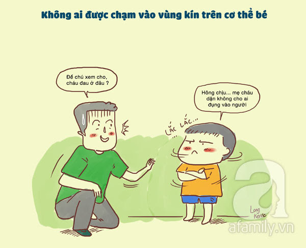
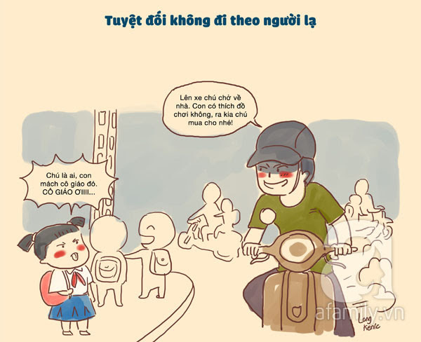
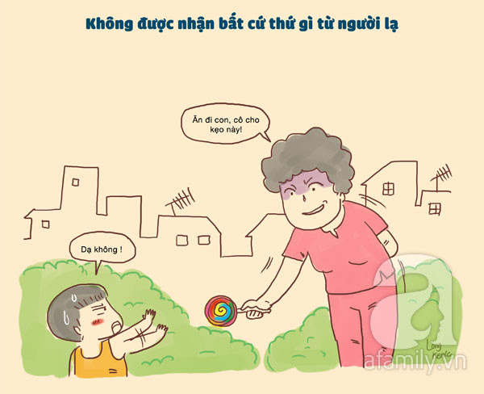
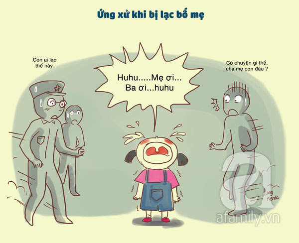
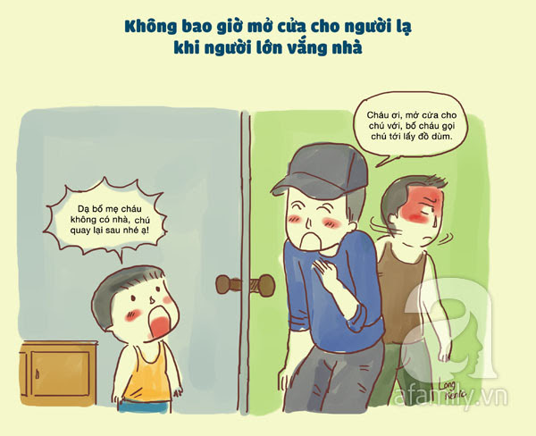
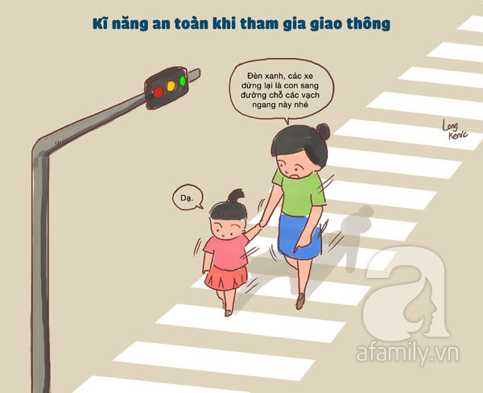
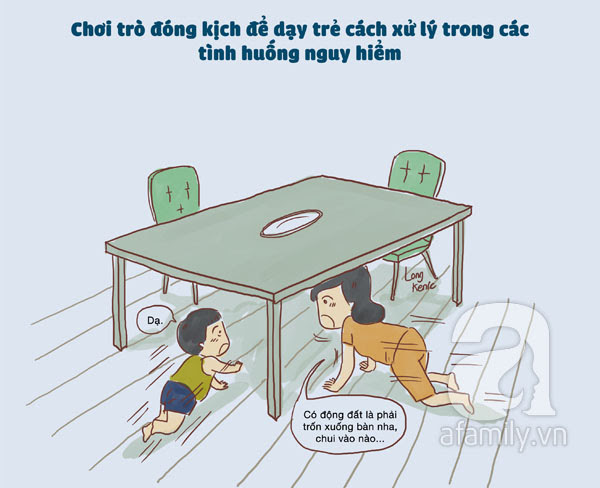
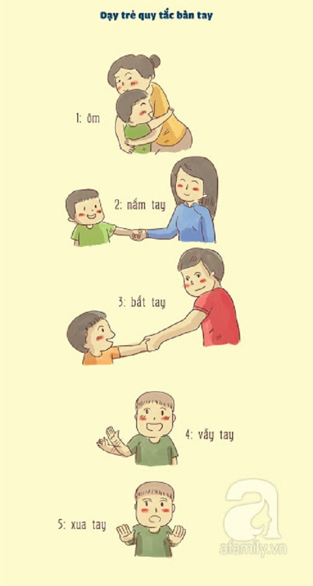

KỸ NĂNG TỰ VỆ
Bố mẹ cần dạy trẻ các kỹ năng giúp bé tự bảo vệ bản thân mình trước các đối tượng nguy hiểm càng sớm càng tốt để giúp trẻ biết cách phản ứng tình huống xấu có thể xãy ra Khi mới sinh ra, đứa trẻ nào cũng nhận được sự bao bọc kĩ càng của bố mẹ và những người thân yêu nhất. Gia đình là môi trường an toàn cho sự phát triển của trẻ. Tuy nhiên, cùng với thời gian, trẻ lớn lên cũng đồng nghĩa với việc sẽ tiếp xúc với nhiều môi trường khác nhau, ngoài môi trường gia đình. Nắm được các kĩ năng xử lý tình huống cơ bản cũng như cách bảo vệ bản thân mình chính là kỹ năng bố mẹ cần phải dạy con càng sớm càng tốt. 8 kỹ năng tự bảo vệ bản thân và ứng phó với các tình huống xấu dưới đây mọi bố mẹ nên dạy con từ khi còn ở độ tuổi mẫu giáo. 1. Không ai được chạm vào vùng kín trên cơ thể bé Ngoại trừ bố mẹ khi giúp trẻ tắm rửa hay bác sĩ, y ta khi thăm khám cho trẻ, còn lại không ai được tùy tiện chạm vào cơ thể trẻ, đặc biệt là những vùng nhạy cảm.  2. Tuyệt đối không theo người lạ Dạy trẻ không được nghe theo những lời dụ dỗ của bất cứ người lạ nào và cũng không được đi theo họ, dù ở bất cứ nơi đâu.  3. Không được nhận bất cứ thứ gì từ người lạ Trẻ con dễ bị dụ dỗ bởi những món quà ngay trước mắt, vì vậy cần dạy con biết cách nói không với các món quà hay bất cứ thứ gì từ người lạ.  4. Ứng xử khi bị lạc bố mẹ Dạy bé khi ở nơi đông người, nếu không thấy bố mẹ phải đứng yên một chỗ chờ bố mẹ, người thân đến đón. Ngoài ra, hãy dạy con tìm chú bảo vệ, chú công an hay người lớn đáng tin cậy ở xung quanh để gọi điện cho bố mẹ, người thân.  5. Không bao giờ mở cửa cho người lạ khi người lớn vắng nhà Tuyệt đối không mở cửa cho người lạ khi người lớn vắng nhà cũng là một nguyên tắc bảo vệ bản thân quan trọng cần dạy trẻ.  6. Kĩ năng an toàn khi giao thông Dạy bé biết một số loại biển báo cơ bản, đi bộ trên vỉa hè, luôn đi bên phải, cách sang đường khi qua các ngã ba, ngã tư…  7. Chơi trò đóng kịch để dạy trẻ cách xử lý trong các tình huống nguy hiểm Đóng kịch khi bị hỏa hoạn, bị người lạ giữ chặt… Giải thích cho trẻ hiểu nguy hiểm trong các tình huống ấy như thế nào và đưa ra một vài giả thiết để tự bảo vệ bản thân.  8. Dạy trẻ quy tắc bàn tay Hướng dẫn con tránh xa những người chưa tốt bằng nguyên tắc bàn tay: ôm với ông bà, cha mẹ, các thành viên trong gia đình; nắm tay cô giáo, bạn bè hoặc họ hàng; bắt tay khi gặp người quen; vẫy tay với người lạ; xua tay thể hiện thái độ dứt khoát với người khiến trẻ thất bất an. 